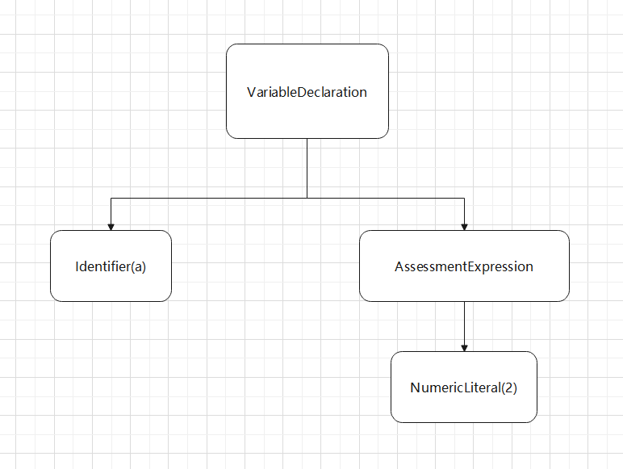

基础知识
本文采用了最新的es6语法,可以放心食用.
专业术语
为了防止在文中反复解释一些术语,我将一些常用术语的解释放在了这里.这意味着你并不需要直接看这里.等之后遇到了这些术语再翻上来看才是正道.
ECMAScript
ECMA本来是指欧洲计算机制造商协会，不过这个组织现在没事就喜欢制定一些标准，其中ECMAScript就是其中一个标准。ECMA-262这个标准的语言，一般被叫做JavaScript。但是实际上JavaScript是对ECMA进行了扩充。
node.js也是对ECMAScript标准的一个扩充。
字面量
字面量就是代码意义上的常量,说白了就是可以放到赋值号右边的都可以叫字面量.这样子这个赋值表达式的值就如字面上一样,你赋值号右边写的是啥,值就是啥,非常容易理解.
注意,我下面代码中赋值语句的右边是字面量,我写这个语句只是方便理解,别理解错了.
xxxxxxxxxx51var 字符串字面量 = "hello world!";2var 数值字面量 = 996;3var 数组字面量 = ["java","c++","JavaScript"];4var 函数字面量 = function(){}5var 对象字面量 = {}函数与方法
理论上对象的函数就叫做方法,但是JavaScript是纯面向对象的语言,万物皆对象.所以函数和方法并没有C++那种半面向对象语言那种严格.一般来讲,window对象的方法叫做函数,其他对象的函数叫做方法,不过也没有那么较真就是了.
弱类型（动态类型）
JavaScript是一种动态类型的语言，这意味着一个变量可以存放任意类型的数据。这样可以提高程序的灵活性。但是也会降低代码的正确性。
注释
JavaScript提供了单行注释和多行注释
xxxxxxxxxx51//单行注释23/*4多行注释5*/虽然JavaScript的标准没有提供文档注释，不过有些强大的编译器仍然可以识别并解析JavaScript的文档注释。
xxxxxxxxxx31/**2* 文档注释3*/
关于结尾的分号
JavaScript并没有强制要求你加上分号,也没有要求一定不加,一般情况下看自己喜好就行.
不过只有这么两种情况下必须加分号:
双引号与单引号
JavaScript不区分单引号和双引号,字符串可以随意用这两种引号,不像其他语言严格取分大小写。
不过ESlint标准，要求字符串必须是单引号。
输入与输出
输出有两种常用方式
xxxxxxxxxx21alert("hello world")//弹窗2console.log("Hello World")//控制台输出输入可以使用prompt方法，这个会直接弹出一个弹窗，也就是说需要浏览器环境
xxxxxxxxxx21var age = prompt("输入年龄")2console.log(age)Hello World
浏览器环境下,直接打开浏览器,F12找到console就能看到.
xxxxxxxxxx131<html>3 <head>4 <meta charset="utf-8">5 <title></title>6 <script type="text/javascript">7 console.log("Hello World");8 </script>9 </head>10 <body>11 </body>12</html>13node环境下,用node命令执行语句.
xxxxxxxxxx11console.log("Hello World");
运算符
等于与严格等于
等于运算符==允许JavaScript的解释器进行隐式转换，而严格等于不允许。
xxxxxxxxxx21console.log("520"==520)//true2console.log("520"===520)//falsevoid
void在其他语言一般都用于代表方法的返回值类型为空，但是在JavaScript里面却是一种运算符。void运算符执行的表达式，返回值永远是undefined。
xxxxxxxxxx21console.log(void (3==2));//undefined2void (console.log("hello world"));//执行了方法，但是返回值永远是undefined
void经常用于HTML中a标签。用来表示点击不发生跳转。
xxxxxxxxxx11<a href="javascript:void(0)">单击此处什么也不会发生</a>
除此之外，void还用于箭头函数，防止内存泄漏。箭头函数标准中，允许在函数体不使用括号来直接返回值。 如果右侧调用了一个原本没有返回值的函数，其返回值改变后，则会导致非预期的副作用。 安全起见，当函数返回值是一个不会被使用到的时候，应该使用 void 运算符，来确保返回 undefined（如un下方示例）。这样，当 API 改变时，并不会影响箭头函数的行为。
xxxxxxxxxx11button.onclick = () => void doSomething();!!
!!可以把其他类型的数据快速转成bool类型。
xxxxxxxxxx121//下面都是false2!!undefined3!!null4!!05!!false67//下面都是true8!!true9!!"1"10!!1,11!!{}12!![]instanceof
我们可以用instanceof运算符来判断两个两个对象间的关系。如果 A instanceof B == ture代表A是B的实例对象。
xxxxxxxxxx11Student instanceof Object == truetypeof
xxxxxxxxxx11typeof
数据类型
boolean
布尔类型只有true和false，跟其他语言一模一样。
number
几个特殊的常量
NaN：NaN即非数值（Not a Number），是一个特殊的数值;在js中任何数值除以非数值会返回NaN,不会影响其他代码执行。 任何涉及NaN的操作都会返回NaN；
Number.MAX_VALUE： 最大值Number.MIN_VALUE： 可表示的最小正数Infinity：无穷大
xxxxxxxxxx81var intNum = 77; //十进制整数；23var octalNum = 070; //八进制5645var hexNum = 0xA //十六进制1067var floatNum = 10.1 //浮点数8document.write("数值型的变量数据类型是"+typeof(floatNum));
string
xxxxxxxxxx31var string ="我叫string数据类型是";2document.write(string);3document.write(typeof(string));
underfined
xxxxxxxxxx41var a;2document.write("我是a，我是没有定义值，所以数据类型是"+typeof(a));3a=null;4document.write("我是a，我是没有定义值，所以数据类型是"+typeof(a));
object
object是所有对象的父类，所有引用变量都是object类型。
object是引用数据类型，里面操作的都是对象的引用（指针）
xxxxxxxxxx81var a=[1,2,3];2document.write(typeof(a));3var b={4 name:1235};6document.write(typeof(b));7var c=function(){};8document.write(typeof(c));null
null也是一种object类型的数据，但是这个代表空对象
xxxxxxxxxx11console.log(typeof null)
类型转换
显式类型转换
数值
正常情况下，如果字符串里面是纯数字，那么这个方法就会返回字符串里面的值
xxxxxxxxxx11123 === Number("123")如果字符串里面有非数值型数据，那么返回NaN
xxxxxxxxxx11isNaN( Number("123a") ) //true注意！有一些特殊的数值转换
xxxxxxxxxx31Number(null) === 02Number(true) === 13isNaN(Number(undefined)) //true
隐式类型转换
在JavaScript中，隐式类型转换实际上是隐式调用了显示类型转换的方法。数值型是转换的最后结果，具体过程如下：

xxxxxxxxxx111//隐式转换的话就是2[1] == true34//首先转换成字符串5[1].valueOf().toString() === '1'6//然后转化成数值7Number([1].valueOf().toString()) === 18//bool类型直接强转9Number(true) === 110//最后111 === 1
布尔
xxxxxxxxxx210 == false21 == true如果使用了!运算符，那么数据将会直接转换为bool类型。需要记住。
xxxxxxxxxx131!undefined == true,2!null == true,3!NaN == true,4!'' == true,5!0 == true,678![] == false,9![1, 2, 3] == false,10!'123' == false,11!1 == false,12!{} == false,13!{name: "loli"} == false
字符串
xxxxxxxxxx11"123" == 123同样的，模板字符串也可以转换
xxxxxxxxxx21var age = 102`${age} `== 10特别的，空字符串将转换为0
xxxxxxxxxx11'' == 0 == false
数组
数组也是对象，所以数组第一步会转化成字符串。如果数组里面有字符串的话，会自动拼接。
xxxxxxxxxx31[1,2,3] == '1,2,3'2['name','age'] == 'name,age'3[1] == '1'如果数组只有一个数值，那么转换成的字符串还能转换成数值型
xxxxxxxxxx11[1] == '1' == 1特别的，如果数组为空，将转换为空串
xxxxxxxxxx11[] == '' == 0 == false特殊转换
另外还有一些特殊类型的隐式转换
- NaN和任何数据都不相等，包括他自己。
xxxxxxxxxx11NaN != NaN- undefined 可以隐式转换为 null
xxxxxxxxxx11undefined == null
字符串
定义与使用
xxxxxxxxxx21//用字面量创建2var dream ="愿天下没有996!";
字符串常用方法
es6 新增字符串方法
includes()
startWith()
xxxxxxxxxx41//字符串开头字母之后的字符串是否为h2str.startWith("h");3//字符串开头第2个字母之后的字符串是否为ello4str.startWith("ello",1);endWith()
toUpperCase()/toLowerCase()
xxxxxxxxxx31//可以把str里面的字母全部变成大写/小写，但是不会改变a本身的数据2str.toUpperCase()3str.toLowerCase()
模板字符串
模板字符串是超级无敌强化之后的字符串,用间隔符(ESC下面那个符号)来引用.
下面简述它的两个主要功能
- 可以在字符串内直接使用变量,并计算
- 可以在字符串内保留回车,不用自己拼接回车了.
当一个字符串拼接的过长时,原来那种+号的写法过于繁琐,所以可以使用模板字符串,直接把变量放在里面
xxxxxxxxxx51//注意,return中的是间隔符,并不是引号.2function KillerQueen(name,age){3 return `我叫${name},今年${age}岁`4}5console.log(KillerQueen("吉良吉影",33));不仅仅是这样,模板字符串里面的变量也可以进行运算,并且保留回车.
xxxxxxxxxx61function Real_GDP_per_capita(money){2 return `3 赵家有钱${money}万,隔壁9个穷光蛋;4 平均起来算一算,各个都是赵${money/(9+1)}万`;5}6console.log(Real_GDP_per_capita(1000));字符串的解构
可以把字符串结构成一个数组，每一个数组的元素代表字符串的一位。
xxxxxxxxxx51var string = "123456789"2var [a,b,c] = string3console.log(a,b,c)4//输出：5//1 2 3
数组
数组常用方法
concat() 可以拼接两个数组
xxxxxxxxxx31var loli1 = ["雷姆","伊莉雅","波莱特","巧克力"];2var loli2 = ["86","香子兰","牛顿"];3console.log(loli1.concat(loli2));
数组的解构
指得是可以把数组里的内容一次批量导出并赋值。
xxxxxxxxxx51var loli=["86","波莱特","日日姬"]2var [loli1,loli2,loli3]=loli3console.log(loli1,loli2,loli3)4//输出：5//86 波莱特 日日姬
函数
简介
JavaScript的函数就是对象,万物皆对象.但是JavaScript是弱数据类型的,所以在使用函数的时候和别的强数据类型语言还是有差别.
就比如说,函数不用写返回值类型,没有返回值也不用 return void; ,并且定义时需要显式定义.
函数的创建方式
赋值表达式创建
这种表达式的右边是一个匿名函数。
xxxxxxxxxx41var print = function(){2 console.log("hello world!")3}4print()直接创建
xxxxxxxxxx41function print(){2 console.log("hello world!")3}4print()用Function构造函数创建
不推荐使用。构造函数需要用Function来创建函数，Function里面的参数就是函数体，需要用引号括起来，但是里面没有提示，非常不好用。
xxxxxxxxxx41var print=new Function(2 `console.log("hello world!") `3)4print()另外用构造函数创建函数时，new Function()的new可以省略。
箭头函数
这个东西看着复杂,实际上就是一个简化版匿名函数,
我们可以用匿名函数来参考着看.
xxxxxxxxxx81var fun1 = function (id){2 console.log("匿名函数"+id);3}4var fun2 = (id) => {5 console.log("箭头函数"+id);6}7fun1(0);8fun2(1);若函数,只有一个参数,可以省略小括号,但是没有参数的话,必须加一个空括号().
并且函数只有一行代码的话,可以省略大括号,经典操作了.
xxxxxxxxxx61var fun1 = function (id){2 console.log("匿名函数"+id);3}4var fun2 = id => console.log("箭头函数");5fun1();6fun2();是不是一下子就简化很多了.但是这个还是有一个需要说明的地方.
注意!如果没有大括号,那么编译器默认会给前面加上return,返回该语句.
xxxxxxxxxx21var fun2 = () => "0"+721;2console.log( fun2());最后结果返回0721.(柚子厨震怒)
立即执行函数
把一个匿名函数前后都用小括号括起来就变成了立即执行函数,这种函数只能用一次,一旦程序运行到这里立刻执行.
因为没有名字,之后无法被其他程序调用.
xxxxxxxxxx31(function(){2 document.write("我是匿名函数")3})();
rest参数
当函数不确定具体有多少参数时,可以使用rest参数,来统一获取剩下所有参数。
这个其实就是对象的展开，后面会再提。
我们用三个点代表rest参数 ...
xxxxxxxxxx51function Lolis(lolis){2 for(let girl of lolis)3 console.log(girl);4}5Lolis("雷姆","伊莉雅","波莱特","巧克力");可以发现我在console的时候,用了for of语法,这就说明,其实rest参数会把传进来的所有参数封装成数组,可以用数组的方法操作rest参数.
函数原型
这个是函数最重要的地方
函数，函数对象和实例对象
函数对象其实就是函数指针，保存着这个函数在内存中的地址。
xxxxxxxxxx21function Student(){}2Student()上面这个代码中，Student就是函数对象，保存着Student这个函数在堆中的地址值。
而Student()是函数，代表编译器去访问并执行Student指针所指向的内容。
xxxxxxxxxx11var XiaoMing=new Student()如果用这个函数去构造对象，那么这个XiaoMing就是实例对象。其实就是类和对象的关系。
prototype（显式原型）
每个函数对象都拥有prototype属性，这个实际上是一个指针，指向一个被称为原型对象的对象。prototype就是显式原型的指针，可以直接通过属性的方式去访问。
如果这个函数对象是新定义的，那么这个prototype默认指向一个空对象。
xxxxxxxxxx21function Student(){}2console.log(Student.prototype)这个空对象是在定义函数时就创建的，相当于下面这个代码
xxxxxxxxxx11this.prototype= new Object()显式原型默认是一个空对象，但是这个空对象并不是完全空，它里面也有两个默认值constructor和__proto__。
constructor非常特殊，因为constructor指向Student函数对象，而函数对象的prototype又指向原型对象。刚好是一个双链表的结构。

我们可以来直接操作显式原型，为里面添加方法和属性。并且，在显式原型中添加的方法和属性可以直接在实例对象中使用。
xxxxxxxxxx51var 小明=new Student()2Student.prototype.study=()=>{3 console.log("学习使我快乐")4}5小明.study()
__proto__(隐式原型)
所有函数都有隐式原型和显式原型属性，但是实际上这两个都是指针类型，都指向函数的原型对象。但是函数对象更强调显式原型的属性，而实例对象更强调隐式原型属性。
一旦一个实例对象被创建，其隐式原型就会自动指向构造函数的显式原型。这就导致实际上Student构造函数的prototype和实例对象小明的__proto__，实际上都指向了Student的原型对象。
xxxxxxxxxx41function Student() { }2var 小明=new Student()3console.log(小明.__proto__==Student.prototype)4//结果为true实际上在实例对象被创建时，编译器会自动执行这句代码
xxxxxxxxxx11this.__proto__=Student.prototype隐式原型链
在拥有了以上基础的情况下，我们就来思考这样一个问题。在刚才为显式原型添加了方法后，为什么可以直接就用实例对象调用了？究竟是如何调用的？其实这个就是原型链。
首先，实例对象在调用方法或属性时，首先会去查看自己有没有这个方法。如果有就直接用了。
xxxxxxxxxx171function Student() {2 this.study=()=>{3 console.log("构造函数添加的方法")4 }5}67Student.prototype.study=()=>{8 console.log("原型对象的方法")9}1011var 小明=new Student()12小明.study=()=>{13 console.log("我自己手动添加的方法")14}15小明.study()16//结果为：17//我自己手动添加的方法如果自己没有手动定义方法（其实就是重写），那么就回去调用构造函数提供的方法。
xxxxxxxxxx141function Student() {2 this.study=()=>{3 console.log("构造函数添加的方法")4 }5}67Student.prototype.study=()=>{8 console.log("原型对象的方法")9}1011var 小明=new Student()12小明.study()13//结果为：14//构造函数添加的方法其次，如果自己没定义，构造函数也没有，那么紧接着就回去查看__proto__属性所指向的原型对象，调用原型对象的方法。
xxxxxxxxxx101function Student() {}23Student.prototype.study=()=>{4 console.log("原型对象的方法")5}67var 小明=new Student()8小明.study()9//结果为：10//原型对象的方法如果Student的原型对象也没有，那么就会去原型对象的对象找。直到抵达原型链的尽头，如果到了尽头还没有找到，就会报错说not defined。
因为这条原型链一直是依据__proto__来查找原型对象的，所以也叫做隐式原型链。
隐式屏蔽
刚才我们说到，编译器会沿着原型链去查找数据，但是如果修改这个值会如何呢？
实际上，如果这个值在原型上的话，就会发生隐式屏蔽的bug。
xxxxxxxxxx121function Student() {}2//可以看到这个a在原型对象上3Student.prototype.a=145var 小明=new Student()6//修改的这个a并不是原型对象的值7小明.a+=18console.log(小明.a) 9console.log(Student.prototype.a) 10//结果为11//212//1这种bug原理其实很简单，编译器在处理小明.a+=1的时候，首先会通过原型链找到Student.prototype.a，之后进行a+=1。最后在小明这个对象中新建一个属性a，把刚才赋值的结果再赋值给小明.a。
总结一下：
- 读取属性时，会直接去原型链查找结果
- 修改时，先去找结果，之后把这个修改的结果加入本对象中
如果想避免这种情况，请务必直接写Student.prototype.a+=1！！！
原型链的结构
刚才我们只看了原型链调用数据的过程，现在我们来仔细看一下整个原型链的整体结构。
Function链
首先我们先定义了Student函数，而这个定义的过程function Student() {}相当于var Student=new Function()，也就是说我这个Student函数对象本身就是一个实例对象，所以同时拥有prototype和__proto_属性，prototype默认指向空对象（下文会说到），而__proto__则指向了其构造函数Function的原型对象。
xxxxxxxxxx11Student.__proto__==Function.prototypeFunction是什么？Function本身就是用来构造其他函数的函数对象，Function()就是构造其他函数的构造函数。那你自己也是一个函数啊？那你这个函数是谁构造的呢？
答案是Function的构造函数就是自身，也就是说:
xxxxxxxxxx11Function.prototype==Function.__proto__没错，Function非常特殊，它自己就是自己的构造函数，他自己就是自己的实例对象，所以他的两个原型属性相等，指向了Function的原型对象。
那么Function的原型对象是什么？Function的原型对象就是一个对象，所以它由new Object产生，这就代表，Function的隐式原型指向构造函数Object的原型对象。
xxxxxxxxxx11Function.prototype.__proto__==Object.prototype而Function.prototype没有prototype了，因为他并不是一个函数对象。
这样，这条链就完了。
Object链
刚刚说到，创建一个新的函数对象Student时，其prototype默认指向空对象。这个空对象的构建过程是什么呢？首先需要new一个Object，那么既然是new出来的，那么这个Object()就是一个构造函数了，那么刚才我们说过，一切函数都是由Function构造函数创建的，所以
xxxxxxxxxx11Function.prototype==Object.__proto__之后，Object本身肯定也有一个prototype属性，它指向Object的原型对象。这个原型对象非常重要，里面定义了toString，VauleOf等重要方法。而Object.prototype.prototype==undefined，很简单，因为Object的原型对象本身并不是一个函数，所以没有prototype。但是所有对象都有隐式原型，这就麻烦了。你Object的原型对象也是一个对象，如果让他也默认指向一个空对象，那么那个空对象也会有一个隐式原型，就会指向下一个空对象，导致无限递归。
为了避免这种情况，我们规定：
xxxxxxxxxx11Object.prototype.__proto__==null这样这条链就完结了。
实例对象链
首先我要强调，只有函数对象才有prototype，普通的实例对象的prototype==null。
xxxxxxxxxx11小明.prototype==null小明作为实例对象，拥有__proto_属性，指向其构造函数的prototype。
xxxxxxxxxx11小明.__proto__==Student.prototype还记得我刚刚说过的吗？Student的prototype在一开始就被创建了，相当于new了一个空对象。那么既然是被new出来的空对象，那么也就是一个实例对象喽，既然是实例对象，那么这个Student的原型对象也拥有一个__proto__，指向Object构造函数的原型对象。
也就是说：
xxxxxxxxxx11Student.prototype.__proto__==Object.prototype而Student.prototype是一个普通的实例对象，所以没有prototype。
xxxxxxxxxx11null==Object.prototype.prototype这样这条线也完了。
回调函数
回调函数指的是那些由我们自己定义，但是由系统自动调用的函数。
xxxxxxxxxx61function callBack(fun){2 fun()3}4callBack(function(){5 console.log("hello world")6})上面这个例子中，我们定义了一个匿名函数，但是这个函数自动被callBack函数调用执行了，这种被自动调用的函数就是回调函数。
apply，call和bind方法
bind方法就是把所执行的函数做了一个打包，而不是直接运行。
xxxxxxxxxx101function show(){2 console.log(this)3}4var obj={name:"我是obj啦"}5show.bind(obj)()67var show2 = show.bind(obj)8show2()9//输出结果都是10//{ name: '我是obj啦' }可以看到，实际上bind就是把obj.show()这个函数进行了一个保存，不需要每次都去apply和call了，直接可以用一个新的函数去执行。
高阶函数
xxxxxxxxxx471const nums = [2, 4, 8, 16, 32, 64, 128, 256, 512, 1024];2//filter用来过滤想要的数据3//filter函数会调用一个回调函数4//回调函数的参数n会遍历nums数组的元素5//回调函数必须返回一个boolean值,6//若为true则把数据压入新数组,false则过滤掉7var newNums = nums.filter(8 function (item) {9 if (item > 100)10 return true;11 }12);13console.log("newNums:"+newNums);1415//map用来对原数据进行一次映射16//对数组进行一次映射,遍历数组每一项,把数据存入n中,17//return的值存入新的数组18var newNums2 = newNums.map(19 function (item) {20 return item * 1021 }22);23console.log("newNums2:"+newNums2);2425//用于集合中的所有数据,可以进行如全部加一遍的操作26//reduce一共传参两个,第一个是回调函数,第二个是给oldValue初始化的值27//回调函数中,oldValue除第一次外,每次值被赋值为函数return的值28//item依旧遍历之前的数组29var newNums3 = newNums2.reduce(function (oldValue, item) {30 return oldValue + item;31}, 0);32console.log("newNums3:"+newNums3);3334var totle = nums.filter(function (item) {35 if (item > 100)36 return true;37}38 ).map(function (item) {39 return item * 10;40}41 ).reduce(function (oldValue, item) {42 return oldValue+item;43}, 0);44console.log("totle:"+totle);45//箭头函数写法46var totle2=nums.filter(item=>item>100).map(item=>item*10).reduce((pre,item)=>item+pre);47console.log("totle2:"+totle2);对象
万物皆对象
JavaScript只有对象，甚至没有类的概念，可以说是真真正正面向对象的语言。但是很快大家就发现了，虽然说着没有类，但是没有又不行，只能用各种方法间接实现。最终在ES6中引入了类的概念。
记得我在开头说过的吗？JavaScript中不区分函数和方法，因为所有的一切都是对象，方法也是函数对象。
对象的创建方式
字面量创建
xxxxxxxxxx71var girl={2 name: '雷姆',3 age: 18,4 loveStyle: function(){5 console.log("最喜欢你啦！抱抱！")6 }7}用Object创建
xxxxxxxxxx61var girl = new Object();2girl.name = '雷姆';3girl.age = 18;4girl.loveStyle = function() {5 console.log("最喜欢你啦！抱抱！")6}构造函数
构造函数用this来添加属性，其实原理和Object一样的。首先new的时候，this就指向了new出来的内存空间。之后给内存赋值，最后把这个内存起始地址返回给LeiMu，这样就通过this，间接完成了属性的添加。
xxxxxxxxxx81function Girls(){2 this.name = '雷姆';3 this.age = 18;4 this.loveStyle = function() {5 console.log("最喜欢你啦！抱抱！")6 }7}8var LeiMu = new Girls();工厂模式
一种设计模式，这样写出来不用加new
xxxxxxxxxx111function createGirls(name, age) {2 var o = new Object();3 o.name = name;4 o.age = age;5 o.loveStyle = function () {6 console.log("最喜欢你啦！抱抱！")7 }8 return o;9}10var congYU = createGirls("小丛雨", 513);11congYU.loveStyle()
类的创建方式
ES6中，可以用类来创建对象，因为ES6真的很香，跟java他们用法差不多，现在你就能发现ES6有多香了。ES5学起来简直难受的一批，浑身不舒服.
xxxxxxxxxx211class Loli {2 constructor(age) {3 this.age = age;4 }5 gulu_gulu()6 {7 console.log("咕噜咕噜~~~");8 }9 showAge(){10 console.log(`人家今年${this.age}岁`);11 }12 //静态方法13 static ne()14 {15 console.log("呐呐呐呐呐呐呐呐呐呐呐呐呐呐呐呐");16 }17}18var 巧克力 = new Loli(14);19巧克力.gulu_gulu();20巧克力.showAge();21Loli.ne();可以看到,程序正常运行:

类的继承
用extends表示继承哪个类,之后用super来指定继承的属性,默认继承全部的方法.
xxxxxxxxxx151class 天然呆萝莉 extends Loli {2 constructor(age,name) {3 //用super来直接继承属性4 super(age);5 this.name=name;6 }7 //方法默认全部继承过来,无论是普通方法,还是静态方法.8 showInfo(){9 console.log(`嘟嘟噜~~,${this.name}です,今年${this.age}岁`)10 }11}12var 椎名真由理 = new 天然呆萝莉(14,"椎名真由理");13椎名真由理.showInfo();14椎名真由理.gulu_gulu();15天然呆萝莉.ne();可以看到程序正常运行:

重载
JavaScript没有重载，只有重写
对象属性简写
如果在对象中的参数已经在外界被定义过了，那么可以直接写变量名，而不用再去写键值对。
xxxxxxxxxx111var a=162var b=23var show=()=>{4 console.log("hello world")5}6var obj={7 a,b,show8}9obj.show()10//输出11//hello world如果不想用这个变量名，可以按照原本的语法来写。
xxxxxxxxxx141var a=122var b=23var show=()=>{4 console.log("hello world")5}6var obj={7 age:a,8 b,show9}10obj.show()11console.log(obj.age)12//输出13//hello world14//12
对象的解构
指得是可以把对象的键批量导出的一种语法。在export中用得很多。
xxxxxxxxxx81var loli={2 name:"小可爱86酱",3 age:704}5var {name,age}=loli6console.log(name,age)7//输出8//小可爱86酱 70其实这里面就用到了属性的简写，实际上的代码应该是这样。
xxxxxxxxxx81var loli={2 name:"小可爱86酱",3 age:704}5var {name:name,age:age}=loli6console.log(name,age)7//输出8//小可爱86酱 70首先var了一个对象，这个对象有两个属性，也就是左边的name和age，而这两个属性又解构的loli被传入了两个参数，分别是右边的name和age。
如果不是很理解可以看这个代码：
xxxxxxxxxx81var loli={2 name:"小可爱86酱",3 age:704}5var {name:MYname,age:MYage}=loli6console.log(MYname,MYage)7//输出8//小可爱86酱 70也就是说右边的值是自定义的，也是需要被传入数据的。
对象的展开
对象的展开就是指把一个对象展开成一个个的键值对，一般用于把两个对象直接合并。看一下例子就明白了。
xxxxxxxxxx61var c = { hasPointer: true }2var java = { isOOP: true }3var CPP = {c,java}4console.log(CPP)5//结果6//{ hasPointer: true, isOOP: true }可以看到，CPP通过...的语法，可以把c和java的属性直接解析出来并且把结果传入CPP对象中。
如果不用这种展开的语法会怎么样呢？
xxxxxxxxxx61var c = { hasPointer: true }2var java = { isOOP: true }3var CPP = { c, java }4console.log(CPP)5//结果6//{ c: { hasPointer: true }, java: { isOOP: true } }可以看到，这个其实直接把指针传进去了，而不是传的值。
这种语法其实可以理解为一种多继承，在本例中C++继承了c的指针和java面向对象的思想。所以以后使用多继承可以考虑这种对象的展开语法。
对象键值对的赋值
可以用中括号直接对对象添加键值对
xxxxxxxxxx41var obj ={}2obj["name"]="loli"3console.log(obj)4//name: "loli"with
with可以来批量修改对象的属性或方法
xxxxxxxxxx101var loli = {2 name:"小丛雨",3 age:134}5with(loli){6 name="宁宁",7 age=158}9console.log(loli)10//{name: "宁宁", age: 15}但是不推荐使用with，因为with可能会导致很多bug。比如下面这个
xxxxxxxxxx201var loli = {2 name:"小丛雨",3 age:134}5var book = {6 price:307}89function change (obj){10 with(obj){11 name="宁宁",12 age=1513 }14}1516change(loli)17change(book)1819console.log(loli)//{name: "宁宁", age: 15}20console.log(book)//{price: 30}可以看到，我明明把loli和book对象传了进去，但是最后只有loli对象正常输出了，这是为什么？其实当book对象进入with代码块之后，发现直接对一个未声明的属性赋值，按照编译器的规定，一切未声明的属性全都归属window对象。所以这个name和age实际上被添加到了window对象上面去。
xxxxxxxxxx31//a没有用var声明，默认添加到了window对象上2a=133console.log(a)
this
精通this是你从JS萌新变成JS巨佬的必经之路,但是想熟练掌握这个东西,并不是一件轻松的工作..
在普通函数中
如果以函数的形式调用this，那么this就是调用对象。
xxxxxxxxxx101var 小丛雨={2 age:18,3 name:"小丛雨",4 show:function(){5 console.log(this)6 }7}8小丛雨.show()9//输出10//{age: 18, name: "小丛雨", show: ƒ}可以看到，this就是调用该方法的对象。
比较特殊的是，所有全局函数都是定义在window对象上的，所以全局函数的this都是window
xxxxxxxxxx71function Student() {2 console.log(this) 3}4Student()5//输出6//Window 7//实际上相当于window.Student()在构造函数中
首先来看看执行构造函数的流程：
- 创建一个新的对象
- 链接原型
- 绑定this
- 如果函数没有return语句，那么在new表达式中，会自动return this
xxxxxxxxxx111function Girls() {2 this.name = '雷姆';3 this.age = 18;4 this.show= function() {5 console.log(this)6 }7}8var LeiMu = new Girls();9LeiMu.show();10//输出11//Girls {name: "雷姆", age: 18, show: ƒ}也就是说实际上代码应该是这个样子的
xxxxxxxxxx131function Girls() {2 var temp = new Object();3 temp.name = '雷姆';4 temp.age = 18;5 temp.show = function () {6 console.log(this);7 }8 //注意，实际上是不能给this赋值的，我这只是为了说明而已9 this = temp;10 return this;11}12var LeiMu = new Girls();13LeiMu.show();另外，在调试的时候可以发现，在创建这个对象的时候，首先会开辟一片内存空间，this会一直指向这个内存空间。之后Girls把this直接return了，赋值给了LeiMu，所以之后LeiMu也指向了这个空间，这样就完成了地址的接力棒。
调用call和apply时
call方法里面是谁，this就指向谁，这个最简单。
xxxxxxxxxx71function show(){2 console.log(this)3}4var obj={name:"我是obj啦"}5show.apply(obj)6//输出7//{ name: '我是obj啦' }super的指向
super指向其父类的显式原型。
编译原理
基本过程
分词/词法分析
在这个过程中，解释器会把代码分成一个一个有实际意义的代码块，也就是所谓的词法单元。
比如说var a = 2;就会变成var a = 2 4个单独的词法单元。
语法分析
这个阶段，会把刚才的词法单元转化成一棵抽象语法树。

解释执行
将高级语言转化为机器语言
LHS和RHS
这个就是左值和右值的关系，其他语言虽然也有，但是在编译原理这里意思略有不同。
LHS代表左值查询，例如a=1，这种带赋值语句的表达式，就会调用左值查询，因为这种赋值语句会实实在在更改内存数据，所以左值查询实际上是去查找a所在内存。
RHS虽说是右值查询，实际上代表的是所有非左值查询，比如console.log(a) function f(a){}。右值查询需要去查找a这个变量的值究竟是多少，而不关心内存什么的，他的任务就是查到a的值多少。
比如下面这个代码
xxxxxxxxxx51function f(a){2 var b=a;3 return a+b;4}5var c = f(2);这个代码一共包括3个LHS和4个RHS
f(2)执行，进行实参传递，隐式赋值a=2，执行1次LHSvar b=a，首先要对a进行RHS，找出其值。之后执行赋值语句LHS。此时执行2次LHS，1次RHSreturn a+b首先要去查找a和b的值，调用2次RHS，然后return。此时执行2次LHS，3次RHSvar c = f(2)首先去查找f(2)return的值，调用一次RHS，最后赋值调用LHS。此时执行3次LHS，4次RHS
预编译
执行上下文
执行上下文分为全局执行上下文和函数执行上下文。说白了这个就是预编译的作用域。
在预编译前，首先会把window确定为全局执行上下文对象，之后进行预编译。对于函数也是如此，在执行函数前，首先会把要执行的函数确定为函数执行上下文对象，然后进行预编译。
注意！定义函数并不会产生执行上下文对象！只有调用才会产生。
xxxxxxxxxx101//1.全局执行上下文对象产生2function outer(){3 //3.即将调用inner方法，再次产生一个函数执行上下文4 inner()5}6function inner(){}7//虽然定义了，但是没有被调用，不会产生执行上下文8function free(){}9//2.即将调用outer方法，outer函数执行上下文对象产生10outer()也就是说在js执行中，每调用一次方法，就会产生一个执行上下文对象。那么js是如何管理这些执行上下文的呢？实际上，js会用一种执行上下文栈来储存管理这些对象。
在代码即将执行时，首先就会把全局执行上下文入栈，之后每进行一个方法调用就会把当前正在执行的函数执行上下文入栈，执行完毕时出栈。如果函数嵌套调用的话，就按照调用顺序依次入栈。
inner函数执行上下文 <-栈顶
outer函数执行上下文
全局执行上下文
变量提升与方法提升
JavaScript为了提高性能，会把代码直接预编译，之后再解释。预编译分为全局预编译和局部预编译，全局预编译发生在页面加载完成时执行，而局部预编译发生在函数执行的前一刻。对应着全局执行上下文和函数执行上下文。
所谓的全局预处理实际上干了这么两件事：
- 把var定义的全局变量添加为window的属性，并把值设置为undefined。
- 把function声明的全局函数添加为window的方法，并且把这个函数对象指向对应的堆内存。
- 把this指向window对象
这就是所谓的变量提升和方法提升。
局部预编译略有不同：
- 给形参赋值，并把形参添加为函数执行上下文对象的属性。
- 给arguments赋值，建立一个伪数组，并把这个添加为上下文对象的属性
- 把var声明的变量添加为属性，并且把值设置为undefined。
- 把function声明的方法，添加为上下文对象的方法
- 把this指向调用当前函数的对象。
另外要注意！先执行变量提升，后执行方法提升。也就是说，如果变量名和方法名重名，那么方法会把变量覆盖掉。
xxxxxxxxxx31function a(){}2var a;3console.log(typeof a)//function如果对变量进行了赋值操作，那么就会重新把变量覆盖回来。
xxxxxxxxxx31function a(){}2var a=1;3console.log(typeof a)//number
词法作用域
词法作用域其实就是指得作用域。作用域有三种：
- 全局作用域
- 函数作用域
- 块作用域
块作用域
JavaScript没有块作用域，但是ES6之后新增了块作用域。可以用let声明局部变量
xxxxxxxxxx51{var a=1}2console.log(a)//134{let b=1}5console.log(b)//报错作用域与执行上下文
这两个比较像，所以做一个区分
- 作用域是在函数定义时就确定的，而执行上下文则是在函数调用前临时创建的
- 作用域是静态的，而函数一旦执行完，执行上下文对象就会被释放
作用域链
查找一个变量的时候，是先查找当前作用域，之后查找上一级，这样的查找顺序很像一个链表，因此叫做作用域链。
不过要注意，作用域链的查找是按照函数作用域来进行的，而不是块作用域，最终会抵达全局作用域。
xxxxxxxxxx81var a = "我是全局作用域"2var block ={3 a:"我是块作用域",4 show:function(){5 console.log(a)6 }7}8block.show()//我是全局作用域可以看到，虽然块作用域也定义了a变量，但是直接被忽视了。
xxxxxxxxxx91var a = "我是全局作用域"2var block ={3 a:"我是块作用域",4 show:function(){5 var a = "我是函数作用域"6 console.log(a)7 }8}9block.show()//我是函数作用域如果是函数作用域就不会被忽视。
内存管理
闭包
闭包的创建
当一个内部函数使用外部函数的数据时，就产生了闭包。大部分人认为，里面的内部函数就叫做闭包。也有一种理解认为，因为只有内部函数使用了外部的数据才产生闭包，所以被引用的数据才应该叫做闭包。
xxxxxxxxxx71function outer(){2 var a=1;3 function inner(){4 console.log(a)5 }6}7outer()要注意的是，只要定义了内部函数就会产生闭包，就算不执行inner也会产生闭包。
下面这种情况就不会产生闭包，因为函数的定义并没有被执行，此时必须要调用inner才能产生闭包。
xxxxxxxxxx81function outer(){2 var a=1;3 var inner = function(){4 console.log(a)5 }6 inner()7}8outer()闭包的作用
实现静态局部变量
闭包可以让外部函数的局部变量不会被释放，相当于续命（膜）。利用这个特性，可以来间接实现静态变量。
xxxxxxxxxx121function outer(){2 var a=13 var add = function(){4 a++5 console.log(a)6 }7 return add8}9var out = outer()10out()//211out()//312out()//4可以看到，a这个局部变量没有被释放，一直在内存中。间接实现了静态变量。
并不是所有的变量都不会被释放，只有被内部函数使用的数据才会保留，剩下的数据都会被释放，包括add这个变量。之所以还能执行add方法，是因为out保留了add方法的指针，这才使add的内存没有被回收。
回调函数
回调函数经常会使用闭包，原理就是回调函数会调用外部数据。
xxxxxxxxxx71function showDealy(msg){2 //内部箭头函数调用了外部的msg数据，产生闭包3 setTimeout(()=>{4 console.log(msg)5 })6} 7showDealy("hello world")模块化（对象导出）
使用闭包可以实现模块化。
xxxxxxxxxx131//module.js2function module (){3 function say(){4 console.log("永远喜欢波莱特")5 }6 function say2(){7 console.log("永远喜欢爱丽丝")8 }9 return{10 say:say,11 say2:say212 }13}xxxxxxxxxx221<!--index.html-->2<html>4 <head>5 <meta charset="utf-8">6 <title></title>7 </head>8 <body>9 <!--引入外部模块-->10 <script type="text/javascript" src="module.js"></script>11 <script type="text/javascript">12 //引用13 var loveModule = module()14 loveModule.say()15 loveModule.say2()16 //或者使用js对象解构赋值17 var {say,say2} = module()18 say()19 say2()20 </script>21 </body>22</html>模块化（添加window属性）
xxxxxxxxxx131//mpdule.js2(function module (){3 function say(){4 console.log("永远喜欢波莱特")5 }6 function say2(){7 console.log("永远喜欢爱丽丝")8 }9 window.module={10 say:say,11 say2:say212 }13})()xxxxxxxxxx161<!--index.html-->2<html>4 <head>5 <meta charset="utf-8">6 <title></title>7 </head>8 <body>9 <script type="text/javascript" src="module.js"></script>10 <script type="text/javascript">11 //添加window对象的属性之后可以直接调用module对象12 module.say()13 module.say2()14 </script>15 </body>16</html>
闭包的生命周期
闭包的创建只有一个要求，内部函数使用了外部函数的数据，而且内部函数不需要调用，只需要执行定义就可以。所以一旦满足这个要求，闭包就会产生。
另外要注意变量提升和方法提升。
xxxxxxxxxx101function outer(){2 //此时闭包已经产生，因为有变量提升和方法提升3 var a=14 function add(){5 a++6 console.log(a)7 }8 return add9}10var out = outer()
xxxxxxxxxx111function outer(){2 3 var a=14 var add = function (){5 //在赋值语句执行完毕之后闭包产生，因为此时才去执行函数的定义。6 a++7 console.log(a)8 }9 return add10}11var out = outer()
闭包的死亡其实很简单，只需要把外部函数的数据释放就可以了
xxxxxxxxxx111function outer(){2 var a=13 function add(){4 a++5 console.log(a)6 }7 return add8}9var out = outer()10//一旦out指向了null，那么垃圾回收器就会把outer的数据回收，闭包消失11out=null
JSON
JavaScript Object Notation（JavaScript对象表示法），简称JSON，其实就是一种更加规范的JavaScript对象。JSON的用途非常广泛，主要用于配置文件，还有数据的传递。
BOM和DOM
Document 对象是 Window 对象的一部分，可通过 window.document 属性对其进行访问。
事件监听
事件监听是通过给按钮绑定单击响应函数实现的，但是在绑定时可能会出现一些意想不到的bug。
比如说，我现在打算给页面里的所有button绑定单击响应函数
xxxxxxxxxx71var buttons = document.getElementsByTagName('button')2for(var i=0;i<buttons.length;i++)3{4 buttons[i].onclick=function(){5 console.log("点的是第"+i+"个")6 }7}但是实际上无论点哪一个按钮，结果永远是第总数个。这是因为var声明的是全局变量，在for循环结束后，i就永远被固定成了buttons.length，这就导致虽然给每一个按钮都绑定了函数，但是i却已经失效了。
- 解决方法1：使用块作用域
也就是说使用let，将i变成局部变量
xxxxxxxxxx71var buttons = document.getElementsByTagName('button')2for(let i=0;i <buttons.length;i++)3{4 buttons[i].onclick=function(){5 console.log("点的是第"+i+"个")6 }7}- 解决方法2：为每个按钮都储存i的值
其实解决方法的本质就是为每个按钮都创建一个独立作用域，那么刚好可以利用每个对象独立储存的特点，直接把index绑定成按钮对象的属性。
xxxxxxxxxx81var buttons = document.getElementsByTagName('button')2for(var i=0;i <buttons.length;i++)3{4 buttons[i].index=i5 buttons[i].onclick=function(){6 console.log("点的是第"+this.index+"个")7 }8}- 解决方法3：使用闭包
闭包可以为每个按钮创立一个独立的作用域，可以使i不受影响。
xxxxxxxxxx81var buttons = document.getElementsByTagName('button')2for (var i = 0; i < buttons.length; i++) {3 (function(index) {4 buttons[index].onclick = function() {5 console.log("点的是第" + index + "个")6 }7 })(i)8}
异常处理
注意：JavaScript是解释型语言，所以一旦遇到异常之后，剩下的代码就不会执行了。
异常类型
ReferenceError
引用错误，一般指引用的变量不存在
- 访问了不存在的变量
xxxxxxxxxx21console.log(a)2//Uncaught ReferenceError: a is not defined- 在初始化前访问变量
注意，只有var声明的变量会进行变量提升，所以let和const声明的变量，必须先声明后使用。
xxxxxxxxxx31console.log(a)2let a =1;3//Uncaught ReferenceError: Cannot access 'a' before initializationTypeError
类型错误，指的是数据类型和使用的不一样
- 把普通变量当成函数
xxxxxxxxxx31var a =12a()3//Uncaught TypeError: a is not a functionRangeError
范围错误，一般是指堆栈溢出
- 递归导致栈溢出
xxxxxxxxxx51function fn(){2 fn()3}4fn()5//test.html:9 Uncaught RangeError: Maximum call stack size exceededSyntaxError
语法错误
xxxxxxxxxx31var a = ?????2console.log(a)3//Uncaught SyntaxError: Invalid or unexpected token '??'try catch
y使用了捕获之后，程序就可以一直运行下去
xxxxxxxxxx71try{2 var a =13 a()4}catch(error){5 console.log("error message:"+error.message)6 console.log("error stack:"+error.stack)7}throw
xxxxxxxxxx11throw new Error("对异常的描述信息")
Promise
同步回调与异步回调
异步就是用来处理回调函数的，在来看异步之前，首先来看看，同步回调方法和异步回调方法的区别。
JS实用技巧
交互变量
xxxxxxxxxx41var a = 12var b = 23var [a,b]=[b,a]4console.log(a,b)取整
xxxxxxxxxx51var a = ~~2.3323var b= 2.33 | 045var c= 2.33 >> 0金钱格式化
xxxxxxxxxx61function formatCash(str) {2 return str.split('').reverse().reduce((prev, next, index) => {3 return ((index % 3) ? next : (next + ',')) + prev4 })5}6console.log(formatCash('1234567890')) // 1,234,567,890JSON深拷贝
xxxxxxxxxx51var a = {2 a: 1,3 b: { c: 1, d: 2 }4}5var b=JSON.parse(JSON.stringify(a))数组去重
啊这
xxxxxxxxxx11[new Set([1, "1", 2, 1, 1, 3])]最大值与最小值
xxxxxxxxxx31var numbers = [5, 458 , 120 , -215 , 228 , 400 , 122205, -85411]; 2var maxInNumbers = Math.max.apply(Math, numbers); 3var minInNumbers = Math.min.apply(Math, numbers);